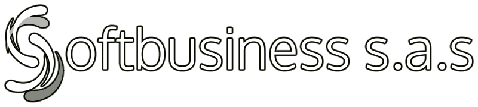

Actividad: TRABAJO CREACIÓN DE UN BLOG Alumno: Juan Carlos Mercado Santos Fecha: 18-05-2025 Fundación Universitaria Internacional de la Rioja

imagen tomada de: https://www.softbusinesssr.com.co/login
La DIAN en los últimos años ha venido desarrollando una serie de normativas, las cuales consisten en obligar a las empresas constituidas en Colombia a reportar cierta información, según la responsabilidad fiscal de cada una.
Por eso, viendo la necesidad, SOFTBUSINESS S.A.S ha desarrollado una plataforma como herramienta adecuada, para cumplir con estas obligaciones, desde cualquier lugar y multiplataforma.
Documentos que puedes transmitir desde la plataforma:
1. Factura electrónica de venta
2. POS electrónico
3. Notas crédito
4. Notas débito
5. Documento soporte
6. Nota de ajuste de documento soporte